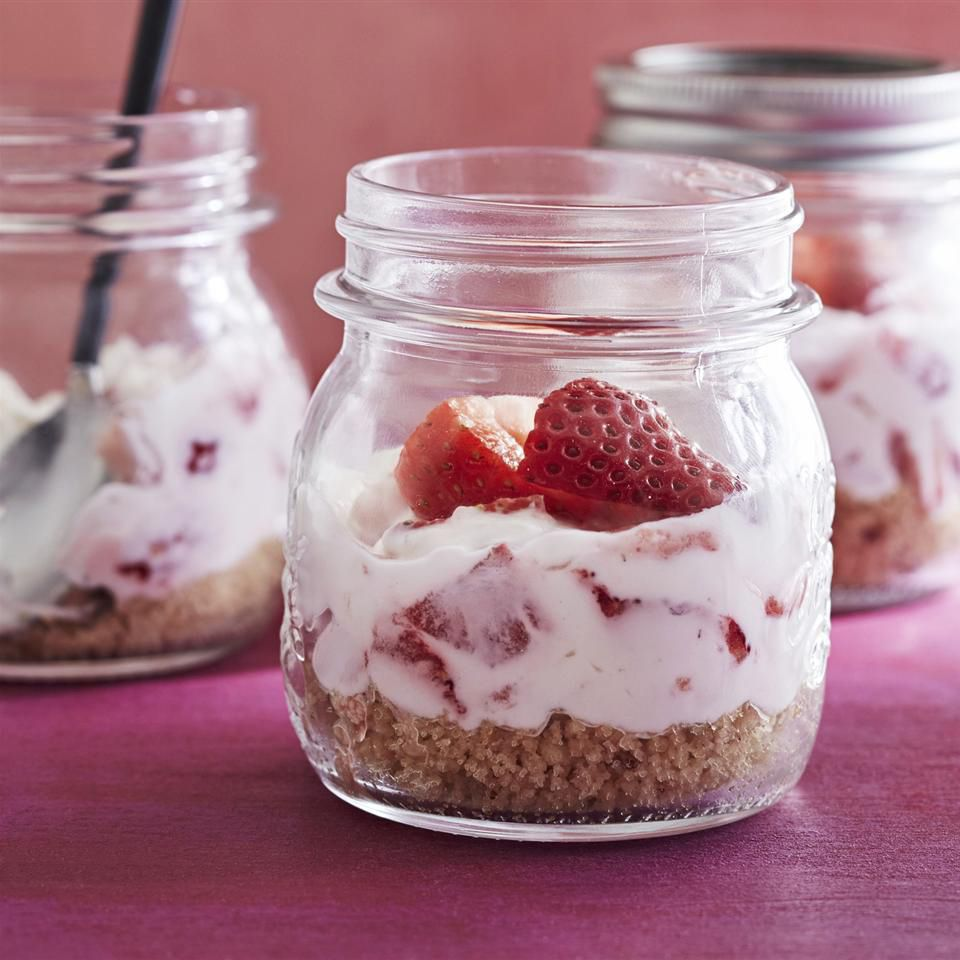

Cheesecake in a Jar

Description
Cheesecake in a jar is perfect for summer picnics. This is a no-bake version of cheesecake with fresh strawberries.
Ingredients
- 6 pecan shortbread cookies (sucj as Keebler Sandies), finely chopped
- 2 tablespoons butter, melted
- 2 tablespoons white sugar
- 6 (½ pint) canning jats with lids
- 12 ounces sliced fresh strawberries
- 1 (8 ounce) package cream cheese, softened
- ½ cup white sugar
- 2 tablespoons fresh lemon juice
- ½ cup heavy cream, whipped
- Mix cookie crumbs, butter, and 2 tablespoons sugar in a bowl until combined. Divide mixture evenly among jars, about 3 1/2 tablespoons each, and gently press (do not pack) into bottoms.
- Halve 6 strawberries for garnish, and set aside. Chop remaining strawberries.
- Beat cream cheese, 1/2 cup sugar, and lemon juice in bowl with an electric mixer at medium speed until smooth. Fold in whipped cream and chopped berries; divide evenly among jars, about 1/2 cup each. Top each with a 2 berry halves and cover with lids. Chill at least 2 hours and up to 3 days.